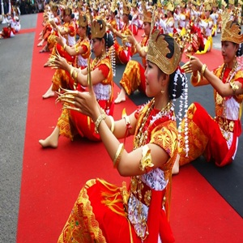

Tari Sembah Tari Tradisional Banten
Kategori: Tarian

Tari Sembah merupakan salah satu tarian tradisional yang berasal dari Suku Pepadun, Lampung. Tarian ini dikenal sebagai tari penyambutan tamu dan sering ditampilkan pada upacara pernikahan dan festival adat Lampung.
Para penari menggunakan busana pengantin wanita asli suku Lampung yang lengkap dengan siger dan tanggainya. Seperti Sesapur yaitu baju kurung bewarna putih atau baju yang tidak berangkai pada sisinya namun pada sisi bagian bawah terdapat hiasan berbentuk koin berwarna perak atau emas yang digantung secara berangkai (rumbai ringgit).
Sedangkan busana yang digunakan sebagai bawahan adalah kain tapis. Kain tapis adalah kain tenun tradisional lampung yang terbuat dari bahan katun bersulam emas dengan motif tumpal atau pucuk rebung. Kain tapis bermotif sepeti ini biasanya disebut dengan nama kain tapis Dewasana (Dewo sanaw).
Selain busana, ada beberapa aksesoris yang dipergunakan oleh para penari tari sembah, antara lain:
- Mahkota siger Pending, yaitu ikat pinggang dari uang ringgit Belanda dengan gambar ratu Wihelmina di bagian atas.
- Bulu serti, yaitu ikat pinggang yang terbuat dari kain beludru berlapis kain merah. Bagian atas ikat pinggang ini dijaitkan kuningan yang digunting berbentuk bulat dan bertahtakan hiasan berupa bulatan kecil-kecil. ikat pinggang bulu serti dikenakan diatas pending.
- Mulan temanggal, yaitu hiasan dari kuningan berbentuk seperti tanduk tanpa motif yang digantungkan di leher sebatas dada.
- Dinar, yaitu mata uang Arab dari emas yang diberi peniti dandigantungkan pada sesapur,tepatnya di bagian atas perut.
- Buah jukum, yaitu hiasan berbentuk buah-buah kecil di atas kain yang dirangkai menjadiuntaian bunga dengan benang dan dijadikan kalung panjang yang dipakai melingkar mulai dari bahu ke bagian perut sampai ke belakang.
- Gelang burung, yaitu hiasan dari kuningan berbentuk burung bersayap yang diatasnya direkatkan bebe yaitu kain halus yang berlubang-lubang. Gelang burung ini diikatkan pada lengan kiri dan kanan, tepatnya di bawah bahu.
- Gelang kana adalah sebuah gelang yang terbuat dari kuningan berukir dan gelang Arab, yang dikenakan bersama-sama di lengan atas dan bawah.
- Tanggai adalah hiasan yang berbentuk seperti kuku berwarna keemasan terbuat dari bahan kuningan yang dikenakan di jari penari.
- Mahkota Siger adalah mahkota berbentuk seperti tanduk yang ditatah hias bertitik-titik rangkaian bunga. Siger ini berlekuk ruji tajam berjumlah sembilan buah. Disetiap puncak lekukan diberi hiasan bunga cemara dari kuningan. Sedangkan bagian puncak siger diberi hiasan serenja bulan, yaitu hiasan berupa mahkota kecil yang mempunyai lengkungan di bagian bawah dan beruji tajam-tajam pada bagian atas serta berhiaskan bunga. Mahkota siger ini secara keseluruhan terbuat dari bahan kuningan.
https://www.sumber.com/jalan-jalan-kuliner/lampung/budaya-lampung/sumber/tari-sembah.html